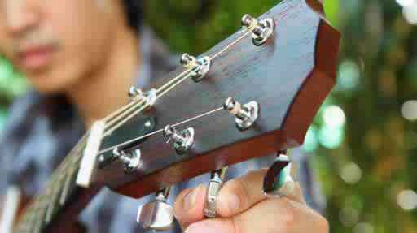

تعلم العزف على الجيتار
تعرف على أجزاء الجيتار. سواء كنت تعزف على الجيتار الكهربائي أو الجيتار الصوتي، فالجيتار يتكون أساسًا من الخشب والمعدن. تهتز الأوتار المغلفة بالنحاس لصناعة الصوت. ويرنّ هذا الصوت في الجسم الخشبي لخلق النغمات الدافئة التي يمتاز بها الجيتار.
- تمتد الأوتار من "رأس الغراب" في الجيتار، حيث يتم تثبيتها بمفاتيح الضبط وتدور هذه المفاتيح لشد أو رخي الأوتار، و الجسر حيث تُثبت في جسم الجيتار. يتم تثبيت الأوتار في جسر الجيتار الصوتي عن طريق مفاتيح قابلة للإزالة، أما في الجيتار الكهربائي فإن الأوتار ترتكز عموما خلال الثقب.
- رقبة الجيتار هي قطعة طويلة من الخشب، مسطحة على جانب واحد (وهذا ما يسمى الفريتس) ومقوسة من الجانب الآخر. ومطعمة لوحة الفريتس بشبكة معدنية تحدد العلامات الموسيقية المختلفة.
- يحتوي الجيتار الصوتي على فتحة الصوت في الجسم حيث يرنّ الصوت ويتضخم، بينما يحتوي الجيتار الكهربائي على ثلاثة من ثلاثة اللاقط الصوتي المغناطيسي والذي تنقل الصوت من خلال مكبر للصوت.
احمل الجيتار بشكل صحيح. قبل البدء في البكاء مثل هندريكس، تأكد من حملك الجيتار بطريقة سليمة. إذا كنت تستخدم اليد اليمنى، عليك العزف في منتصف المسافة تقريبًا بين فتحة الصوت والجسر بيدك اليمنى والضغط على الأوتار في الرقبة بيدك اليسرى.
- العزف على الجيتار، اجلس منتصب الظهر على كرسي أو مقعد بلا ظهر. عند توجيه الجيتار لجسمك، ينبغي أن تتجه الأوتار الصغرى نحو الأرض، وأن تنظر الأوتار الأكثر سمكًا إلى السقف. يلمس ظهر الجيتار المعدة والصدر ويقع الباقي على ساق التي تعلو اليد التي تعزف وتنقر الأوتار.
- يُحمل معظم الجيتار على ساقك وعن طريق تثبيته في جسمك. تستخدم اليد اليسرى لتحقيق ثبات الرقبة ولضغط الأوتار في الفريتس. احمل الرقبة مشكلًا حرف V بالإبهام والسبابة. يجب أن تكون قادر على تحريك يدك اليسرى بسلاسة إلى أعلى وأسفل الرقبة دون الحاجة لرفع الجيتار.
- حتى لو كنت تحمل الجيتار بشكل صحيح، قد تواجه بعض الانزعاج إلى حين التعود على العزف. فلا تثبط عزيمتك إذا آذيت الكتف والعنق والذراعين واليدين. ففي نهاية المطاف سوف تعتاد على ذلك.

اضبط النغمات في الجيتار الصوتي. لا توجد متعة في العزف على جيتار ليس متناغمًا ويمكن أن يؤدي إلى بعض الممارسات السيئة في بدايتك للمرة الأولى. اضبط النغمات بانتظام، حيث يجعل تعتاد توافق توليفة الأوتار ونقر أوتار الرقبة مع علاماتها الموسيقية.
- أولًا عليك معرفة اسم كل وتر. من أسفل لأعلى الرقعة (من الأوتار السميكة إلى الرقيقة) يتم تسمية الأوتار دو، رى، مي، فا، صول، لا، مي (عد عزف العلامات الموسيقية عزف الأوتار ولا تلمسهم). استخدام طريقة لتتذكر هذا الترتيب، مثل دو: ddie، لا : te رى: ynamite صول: ood، سي: ye، دو: ddie
- يعتبر ضابط النغمات الكهربائي جهاز سهل الاستخدام ودقيق جدًا. ثبته في جيتارك واسحب وتر مي عالي. وسيقوم الجهاز بإخبارك إذا كان الجيتار "حادًا" (عالي جدًا) أو "مسطحًا" (منخفض جدًا). اسحب وتر كل علامة وشدد الوتر لجعله أكثر حدة، أو ارخيه لجعلة غليظًا. تأكد أن الغرفة هادئة عند استخدام ضابط النغمات، لأن الميكروفون يمكنه التقاط الأصوات الأخرى.
- إذا كنت لا تستطيع تحمل تكاليف ضابط النغمات، اضبط جيتارك بدون واحدًا، وذلك عن طريق مطابقة العلامة الموسيقية بنظيرتها على البيانو.
تدرب على التعامل مع الفريتس. الفريتس عبارة عن أشرطة معدنية متعامدة على الأوتار التي تميز كل علامة موسيقية. عند عزف علامة موسيقية، اضغط بإصبعك بين الشرائط المعدنية وليس عليها. وعندما تقول أنك تعزف الفريتس الثالث يعني أنك تضع إصبعك في الفجوة بين الفريتس الثاني والثالث. وأيضًا، تأكد من أن أصبعك أقرب إلى الفريتس السفلي لتجنب الأز. اجذب الوتر لأسفل بشدة بحيث يهتز فقط بين إصبعك، مع الضغط عليه بطرف إصبعك.
- في كل مرة تنتقل من فريتس واحد إلى آخر، فإن الرقعة الناتجة تكون نصف خطوة لأعلى وأنت تتحرك في اتجاه الجسم ونصف خطوة سفلية وأنت تتحرك نحو رأس غراب. تدرب على التحرك صعودًا وهبوطًا على لوحة الفريتس، والضغط عليها حتى تحصل على النغمة التي تحتاجها.
أمسك لاقطًا صوتيًا، أو الريشة، وهي قطعة صغيرة من البلاستيك على شكل دمعة المستخدمة في التقاط العلامات الموسيقية المفردة وللعزف على الجيتار. إنها رخيصة ومتاحة في أي متاجر للأدوات الموسيقية. في حين أنها ليست أساسية للعزف على الجيتار، إلا أنها طريقة للبدء.
- اعمل قبضة بيدك اللاقطة للأوتار واجعل الإبهام مستقيمًا على رأس أصابعك الملتوية. امسك الريشة عن طريق بطريقة عمودية بين الإبهام والسبابة، تخرج من يدك بما لا يزيد عن بضعة سنتيمترات.

كوردات الوضع الأول. الكورد هو مجموعة من العلامات الموسيقية المتناغمة ولا تقل عن ثلاث علامات. لبداية عزف الجيتار هناك نوعان أساسيان من الكورات: كورد الوضع الأول، والحبوكورد البريه. كورد الوضع الأول يمكن عزفه بتناغم الأوتار المفتوحة والأوتار المضغوطة وفي أول ثلاثة مربعات على الفريتس من الغيتار.
- الكوردات الأكثر انتشارًا مثل: عزف كورد سي علوي، وايه علوي، و جي علوي و أي سفلي، دي علوي،
- عندما تتقن الأشكال السفلية، مارس التبديل بينهما بأسرع ما يمكنك. واكتاب ترتيب الكوردات التي تريد عزفها بطريقة أكثر أو أقل عشوائية، وقم بالتبديل بينهما، والعزف مرة واحدة.
- تأكد من أنك تعزف العلامات الموسيقية المناسبة. في كورد "ايه علوي"، على سبيل المثال، لا يتحرك وتر "مي السفلي". وسوف تميز هذا على لوحة مع علامة"X" بجانبها. اكتسب الممارسات الجيدات لتحقيق النجاح على المدى الطويل.
تدرب على إصدار صوت عذب. بعد وضع أصابعك على لوحة الفريتس، اعزف من خلال كل أوتار الكورد. وتأكد أن الأوتار التي من المفترض أن ترّن ليست مكتومة أو صامتة.
- إذا كانت العلامات الموسيقية لا ترن بشكل صحيح، فإن الاحتمالات هي أنك لا تضغط بشدة كفاية أو أن أجزاء من أصابعك تلامس هذه الأوتار وتمنع رنّها بوضوح. هل تلامس أي الأصابع غير المستخدمة الأوتار؟[١]
- ابق على أصابع الفريتس ملتوية في جميع الأوقات حتى لا يلمسوا الأوتار، كما لو كانت أصابعك تستريح فوق كرة زجاجية وهمية، أو وجود الرخام في مفصل كل اصبع.
تحريك أوتار الجيتار بطريقة صحيحة. يتكون العزف من توليفات مختلفة الاتجاهات العليا والسفلى، وضرب كافة العلامات الموسيقية للكورد بالتساوي والتوازن. احفظ مرفقك على يمين الجيتار، وازل اللاقطات الصوتية للأوتار السفلية عند تشكيل كورد الوضع الأول، مثل وتر جي. ولا يجب ان يتحرك المرفق حيث أنك تعزف من الرسغ. [٢]
تعلم عزف كورد باريه على الجيتار. كورد باريه هو مفيد للغاية للبدء في عزف الألحان. في كورد باريه (في بعض الأحيان يتم اختصارها إلى " كورد باريه ") تقوم السبابة من اليد الخاصة بالفريتس بضغط جميع العلامات الموسيقية على فريتس واحد. تعزف العلامة فا، وهو وتر بري في الوضع الأول، وتعمل كافة العلامات على الفريتس الأول بالسبابة واعزف ما هو ضروري في شكل وتر مي وانتقل خطوة واحدة أعلى الرقبة، بأصابعك الوسطى والسبابة والخنصر.
- كورد بي هو في نفس شكل مخلب الإصبع على الفريتس الثاني. في الفريتس الثالث يوجد كورد جي. وهي أوضاع صعبة ومؤلمة في بعض الأحيان للأصابع، ويمكنك البدء في العزف فلى الفريتس بأي أغنية أسرع عندما تتعلم تحريك وعزف أوتار كورد الباريه. لم يستخدم الرومان سوى كورد الباريه لتحقيق تأثير كبير.
معالجة جروح الأصابع الخفيفة. عند تعلم العزف على الجيتار. هناك نقطة تبدو فيها الأشياء قاتمة: لا يمكنك تعلم الكوردات بالطريقة السريعة التي تريدها، وأصابعك تقتلك، ويبدو من الأسهل وضع هذا الشيء مرة أخرى في حقيبته. يكمن السبب في توقف معظم اللاعبين الجيتار عن العزف بضعة أسابيع في الألم. بعد بضعة أشهر وسنوات من العزف، وسوف تجد تراكم الجلد الغليظ على أصابع اليد الخاصة بالفريتس والذي يقلل كثيرًا من آلام الأصابع التي تسحب الأوتار لفترات طويلة من الزمن. وتعلم تجاوز هذا الحاجز، هو ما يُحدث الفرق في كل العالم. يجب كل شخص يتعلم العزف على الجيتار أن يتعامل مع أصابعه المتقرحة في البداية، انه يستحق ذلك. واستمر في العزف بشكل منتظم، اتبع هذه النصائح، وسوف تستطيع تجاوز هذه المرحلة في أي وقت من الأوقات. تعلم أن تحب الألم وتربطه بكل ما تحب من الموسيقى والجيتار.
- اغمس أصابعك في الثلج أو عصير التفاح بعد العزف، وذلك لتخفيف الألم.
- معظم المشكلة تكن عقلية. تخيل عازف الجيتار المفضل لديك يشجعك دائمًا وكأنه مدرب رفع الأثقال عندما تكون يديك مجروحة. وهو يصيح "مرة أخرى، مرة أخرى".
- اغمس أصابعك في كحول محمر بعد العزف، فهذا من شأنه تسريع بناء أنسجة العظام. لكن لا تقم بهذا قبل العزف.
تعلم عزف بعض الأغاني. من الممتع أن تعزف الأغنية التي يمكنك التعرف عليها، وليس مجرد العزف على مجموعة من الكوردات أو العلامات، فقد يُكتب عالم كامل من الموسيقى من هذه الكوردات فقط صول، دو، رى. ويوجد بعض الأغاني الشعبية والقديمة مثل "توم دولي" أو "سجن فولسوم بلوز" لجوني كاش يمكن أن تكون وسيلة عظيمة للبدء. إنها فقط ثلاثة كوردات والحقيقة، كما ذكر كاتب الاغاني هارلان هوارد مرة في مقولته الشهيرة.
- ابدأ بطيئًا وقم بالتسريع تدريجيًا، وقم بالغناء (إذا كنت تريد، وإذا كان ذلك يساعد) وابد اهتمامًا خاصًا بالإيقاع. يمكن أن يُسبب هذا نوع من الإحباط بسبب كيف تتدبر هذا البداية، ولكن لا داع للقلق. فكلما كنت مرتاحًا في التبديل بين الكوردات، كلما كنت أقرب للنجاح على خشبة المسرح.
- كما أتقنت أسهل الألحان، انتقل إلى قطع أكثر تعقيدًا. أغنية "سويت هوم ألاباما" لفرقة لينارد سكاينارد هي في الأساس تكرار أساسي للعلامات رى، دو، صول بهذا الترتيب، ولكنها تبدو أكثر تعقيدًا في التسجل، بسبب طريقة الانتقالات السريعة التي يقوم بها عازف الجيتار.
تعلم قراءة علامات الجيتار. لدى عازفي الجيتار نظامهم الخاص في تدوين العلامات الموسيقية على لوحة الجيتار، أو في نوتة الجيتار للاختصار. والفكرة الأساسية هي أن ننظر إلى كل سطر في صفوف النوتة بنفس الطريقة التي ننظر بها في الجيتار؛ كل سطر يناظر حقًا وتر من الأوتار، وكل رقم يخبرك بمكان وضع إصبعك على الفريتس عند تحريك هذا الوتر.
- E|-------------------------------------------------||
- B|-------3---------3----------3--------------------||
- G|---------2---------0--------0---------------2p0--||
- D|-0-0------------------------0--0----0h2p0--------||
- A|------------3-3-------------2---0p2-------0------||
- E|-----------------------3-3--3--------------------||
- لعزف هذه النوتة السريعة لأغنية "سويت هوم ألاباما،" لفرقة لينارد سكاينارد. ستعزف علامتين على وتر سي مفتوح في الفريتس الثالث، ووتر صول في الفريتس الثاني، الخ
- يبدو التبديل بين الكوردات وطريقة التنقلات السريعة مثيرًا. سوف تشعر وكأنك تعزف الموسيقى حقا وليست فقط تتعلم الجيتار. ولكن لا تتعجل ذلك، تأكد من معرفتك بأشكال الكوردات بشكل صحيح وأنك لا تفقد الإيقاع تماما عندما تعزف بسرعة.
التعلم من الآخرين. من الأفضل تعلم الغيتار من خلال مشاهدة واستماع، ومحاكاة أساليب الآخرين. ولا يتوجب اتخاذ دروس رسمية لتعلم الجيتار، ولكن يمكن أن تشارك مع أصدقاء العزف والحيل والاقتراحات يعتبر هذا مصدرًا هامًا في التعلم.
- تُعد الدروس الموجودة على اليوتيوب مفيدة جدًا للمبتدئين والمتقدمين على حد سواء. قدرتك على مشاهدة ستيفي راي فون يندفع بعنف خلال واحدة من تلك المعزوفات المنفردة، أو مشاهدة كيف جاك جونسون يعزف أغنيتك المفضلة عن قرب يمكن أن تكون تجربة تعليمية كبيرة.
- إذا كنت ترغب في العزف على الموسيقى الكلاسيكية أو الجاز في نهاية المطاف، أو حتى إذا كنت ترغب في تعلم القراءة النوتة الموسيقية فإن الدروس الرسمية تكون فكرة جيدة. تعليم نفسك هو وسيلة رائعة لتطوير طريقتك الخاصة، والتي يمكن أن يكون من الصعب جدا أن تتعلم لكسر في مكان ما على الطريق واستبدالها مع نمط "الصحيح".
أفكار مفيدة
- لا تشعر بالإحباط إذا وجدت الكوردات التي تعزفها ليست جيدة. قوّي إصبعك واستمر في التمرين وسوف تتحسن.
- إذا كان لديك صعوبة بالغة في تشكيل الكوردات بأصابعك، قد يكون من الأفضل أن تعمل على تقوّية، براعة أصابعك وزيادة الألفة مع الجيتار.
- البحث عن الأغاني التي تريد عزفها، احصل على العلامات الموسيقية لتلك الأغنية، وتدرب عليها. فهذا يجعل العزف على الجيتار أكثر إثارة.
- تدرب على التقاط الأوتار بالأصابع. ابحث عن بعض الأنماط التي تساعدك على الانترنيت أو حتى مقابل نقاط إضافية. وحاول معرفة أنماط بعض الحان الجيتار المفضلة لديك.
- إذا كانت الكوردات لا ترنّ بالطريقة المطلوبة، قم بتحريك كل وتر في الكورد، فقد تكون تكتم أو تحرك وتر بطريقة خاطئة. من خلال ذلك كنت تستهدف مشكلة الموجودة في الكورد. تأكد من أنك تستخدم أطراف إصبعك لبناء الكورد حيث يجعل الصوت أكثر وضوحًا.
تحذيرات
- سواء كانت الدروس مكتوبة أو من فيديو من دون مساعدة من المعلمين ذوي الخبرة يمكن أن يؤدي إلى معلومات خاطئة يصعب تصويبها. وفي حين بإمكانك التعلم بفاعلية بدون دروس رسمية، إلا إنه قد تكون هذه الدروس مفيدة لتصحيح أي مشاكل شخصية في العزف.
الأشياءالتي ستحتاج إليها
- جيتار تشعر أنه مناسب لك
- ريشة ( اختياري)
- جهاز موالفة النغمات

About us :
Coding-labs.com is a small team developing android applications, if you want to contact us admin@coding-labs.com